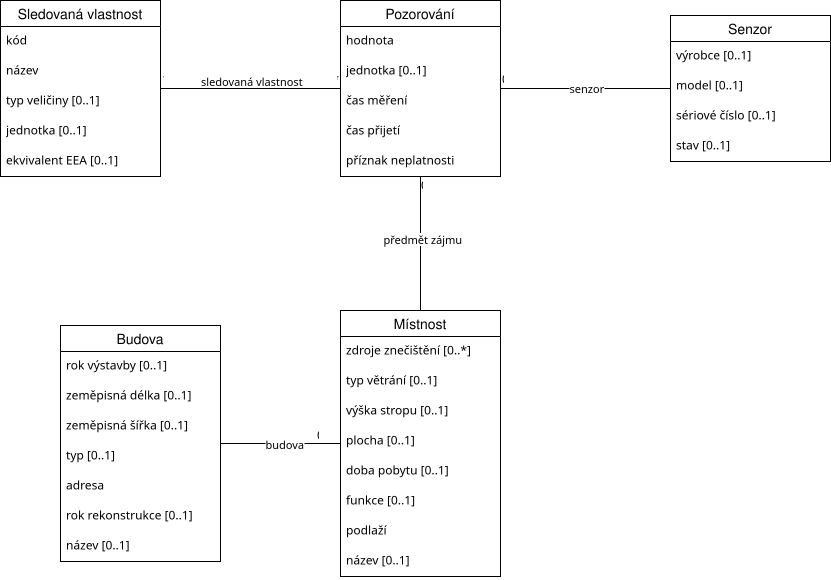

Tento dokument je otevřenou formální normou popisující datový model měření kvality vnitřního prostředí budov (anglicky Indoor Environmental Quality, IEQ), která platforma Ambiquality zveřejňuje jako otevřená data. Norma vymezuje sledovanou entitu — jednotlivé pozorování (měření jedné veličiny jedním senzorem v jednom okamžiku) — a každou její vlastnost popisuje včetně datového typu, povinnosti, navázané ontologie a možných úskalí. Doplňuje ji slovník sledovaných vlastností, číselníky a popis kontextových entit (budova, místnost, senzor). Všechna data jsou poskytována pod licencí CC BY 4.0.
Datový model je ukotven ve standardní ontologii SOSA/SSN (Sensor, Observation, Sample, and Actuator), kterou doplňují:
qudt:hasQuantityKind) a jednotky (qudt:unit);ambiq: = https://data.ambiquality.org/ns# pro vlastnosti,
které ve standardních slovnících nemají ekvivalent (čas přijetí, příznak neplatnosti).
Data jsou dereferencovatelná (5★ otevřená data): každé pozorování, sledovaná vlastnost, koncept číselníku,
budova, místnost i senzor mají vlastní IRI, jež vrací JSON nebo JSON-LD (obsahový vyjednávání přes hlavičku
Accept). Strojově čitelný přístup popisuje
specifikace OpenAPI.

V této sekci je definována hlavní třída Pozorování a všechny její vlastnosti a vazby. U každé vlastnosti je uveden identifikátor používaný v datových formátech, datový typ, název, popis, navázaný termín ontologie (IRI), povinnost a — kde je to relevantní — možná úskalí při interpretaci.
Třída sosa:Observation reprezentuje jedno měření jedné fyzikální veličiny jedním senzorem
v jednom okamžiku. Hodnota je vždy doprovázena identifikací co se měří
(sledovaná vlastnost), čím
(senzor) a kde
(předmět zájmu — místnost).
iri / @idhttps://data.ambiquality.org/v1/observations/{uuid}. V prosté reprezentaci JSON je hodnota UUID dostupná též ve vlastnosti id (dcterms:identifier).https://data.ambiquality.org/v1/observations/3f1c…valuexsd:double)sosa:hasSimpleResult.412.5unit, který slouží jen pro čtení člověkem.unitppm, °C). Slouží pro čtení člověkem; strojově závaznou jednotkou je unitUri.ppmunitUrivalue; v JSON-LD termín qudt:unit. Hodnota je IRI z slovníku jednotek QUDT.http://qudt.org/vocab/unit/PPMquantityKindUriMassDensity sdílený všemi pevnými částicemi); v JSON-LD termín qudt:hasQuantityKind.http://qudt.org/vocab/quantitykind/AmountOfSubstanceFractionobservedProperty, nikoli typ veličiny.observedAtxsd:dateTime, UTC)sosa:resultTime.2026-01-15T10:30:45.123456ZreceivedAtxsd:dateTime, UTC)ambiq:receivedTime.2026-01-15T10:30:46.234567ZisInvalidxsd:boolean)ambiq:isInvalid. Publikovaná měření se nikdy nemažou ani nemění — vadné se pouze označí.falseincludeInvalid=true. Neplatná hodnota zůstává v datech kvůli auditovatelnosti a neměnnosti.licensedcterms:license. Vždy CC BY 4.0.https://creativecommons.org/licenses/by/4.0/observedPropertysosa:ObservableProperty)sosa:observedProperty. Hodnota je dereferencovatelné IRI https://data.ambiquality.org/v1/properties/{kód}.https://data.ambiquality.org/v1/properties/co2madeBySensorsosa:Sensor)sosa:madeBySensor. Hodnota je IRI senzoru v evidenci.sensorId obsahuje UUID senzoru)https://data.ambiquality.org/v1/sensors/9b2a…featureOfInterestIriambiq:Room)sosa:hasFeatureOfInterest.https://data.ambiquality.org/v1/rooms/77d0…null, žádné období umístění daný okamžik nepokrývá (senzor nebyl v té době přiřazen k místnosti).
Každá sledovaná vlastnost je publikována jako sosa:ObservableProperty a zároveň
skos:Concept na dereferencovatelném IRI https://data.ambiquality.org/v1/properties/{kód}.
Nese typ veličiny a jednotku QUDT a — u regulovaných znečišťujících látek — vazbu skos:exactMatch
na slovník znečišťujících látek EEA/EIONET.
Úplný seznam vrací /v1/properties.
| Kód | Název | Typ veličiny (QUDT) | Jednotka (QUDT) | EEA exactMatch |
|---|---|---|---|---|
co2 | Oxid uhličitý | AmountOfSubstanceFraction | PPM | — |
eco2 | Ekvivalentní oxid uhličitý (eCO₂) | AmountOfSubstanceFraction | PPM | — |
co | Oxid uhelnatý | AmountOfSubstanceFraction | PPM | pollutant/10 |
o3 | Ozon | MassDensity | MicroGM-PER-M3 | pollutant/7 |
no2 | Oxid dusičitý | MassDensity | MicroGM-PER-M3 | pollutant/8 |
so2 | Oxid siřičitý | MassDensity | MicroGM-PER-M3 | pollutant/1 |
voc | Těkavé organické látky (TVOC) | AmountOfSubstanceFraction | PPB | — |
pm1 | Pevné částice < 1 µm (PM1) | MassDensity | MicroGM-PER-M3 | — |
pm2_5 | Pevné částice < 2,5 µm (PM2.5) | MassDensity | MicroGM-PER-M3 | pollutant/6001 |
pm4 | Pevné částice < 4 µm (PM4) | MassDensity | MicroGM-PER-M3 | — |
pm10 | Pevné částice < 10 µm (PM10) | MassDensity | MicroGM-PER-M3 | pollutant/5 |
temperature | Teplota vzduchu | Temperature | DEG_C | — |
humidity | Relativní vlhkost | RelativeHumidity | PERCENT_RH | — |
air_velocity | Rychlost proudění vzduchu | Speed | M-PER-SEC | — |
pressure | Atmosférický tlak | AtmosphericPressure | PA | — |
illuminance | Osvětlenost | Illuminance | LUX | — |
cct | Náhradní teplota chromatičnosti | CorrelatedColorTemperature | K | — |
laeq | Ekvivalentní hladina akustického tlaku A (LAeq) | SoundPressureLevel | DeciB_A | — |
Provozovatel může slovník rozšířit o vlastní veličiny (nikdy přepsat zabudované) konfiguračním
souborem rozšíření slovníku. Hodnoty pollutant/{id} jsou koncovkou IRI
http://dd.eionet.europa.eu/vocabulary/aq/pollutant/{id}.
Kontextové entity používají řízené slovníky publikované jako SKOS koncepty na dereferencovatelných IRI
https://data.ambiquality.org/v1/codelists/{schéma}/{kód} (dvojjazyčné popisky cs/en).
Přehled vrací /v1/codelists.
building-type)residential Bytový dům · family_house Rodinný dům · office Administrativní budova ·
educational Školská budova · healthcare Zdravotnické zařízení · retail Obchodní budova ·
industrial Průmyslová budova · other Jiné
room-function)office Kancelář · classroom Učebna · conference Konferenční místnost ·
lab Laboratoř · kitchen Kuchyně · storage Sklad · corridor Chodba ·
other Jiné
ventilation-type)natural Přirozené větrání · mechanical Nucené větrání · hybrid Hybridní větrání ·
none Bez větrání
pollution-source)traffic Doprava · industry Průmysl · construction Stavební činnost ·
cooking Vaření · chemicals Chemické látky · tobacco_smoke Tabákový kouř ·
none Žádné · other Jiné
exposure)short Krátkodobý pobyt · medium Střednědobý pobyt · long Dlouhodobý pobyt
sensor-status)active Aktivní · maintenance V údržbě · decommissioned Vyřazeno
Pozorování se odkazují na následující entity evidence (budova, místnost, senzor). Každá má vlastní
dereferencovatelné IRI a aktuální stav; historická verze se získá parametrem asOf.
Třída ambiq:Building. Adresa následuje český standard
OFN Adresy ukotvený na kód adresního místa RÚIAN
(viz ADR 0002 v repozitáři). Vlastnosti: name, address (OFN Adresa),
buildingTypeCode (číselník building-type), latitude, longitude,
yearBuilt, yearRenovated. Souřadnice jsou přesné (otevřená data, bez anonymizace).
Schéma: building.json.
Třída ambiq:Room; vystupuje jako předmět zájmu pozorování. Vlastnosti: buildingId
(vazba na budovu), name, floor (podlaží), functionCode
(room-function), exposureCode (exposure), areaM2,
ceilingHeightM, ventilationType (ventilation-type),
pollutionSources (seznam konceptů pollution-source).
Schéma: room.json.
Třída sosa:Sensor. Vlastnosti: buildingId, roomId,
manufacturer, model, serialNumber, statusCode
(sensor-status) a measuredParameters — seznam měřených veličin
(sosa:observes) s jejich typem veličiny a jednotkou QUDT.
Schéma: sensor.json.
Data jsou dostupná jako JSON, JSON-LD (s odkazem na @context) a CSV (samopopisné přes tabulkové schéma CSVW). Prostá JSON schémata: observation.json.